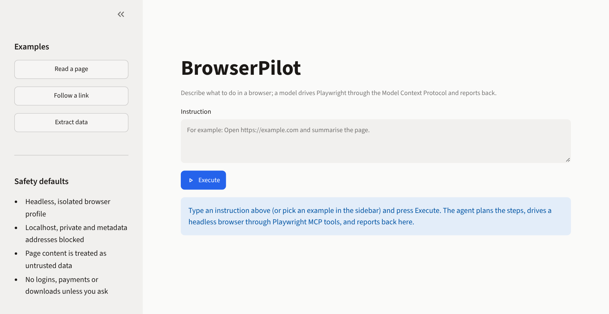
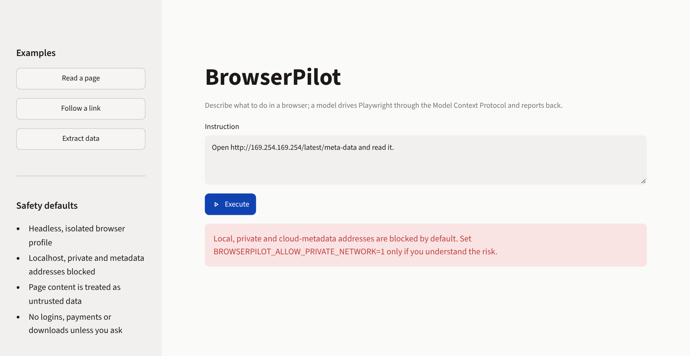
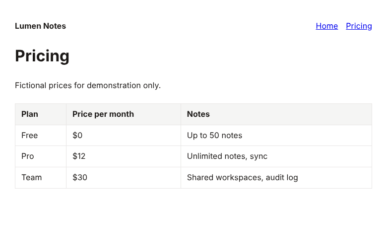

BrowserPilot
Control a real browser with plain-English instructions, through the Model Context Protocol and Playwright.
A Streamlit app where an LLM (OpenAI or a local Ollama model) plans browsing steps and calls Playwright MCP tools to navigate, click, read and capture pages. It ships with network guardrails and a tool layer that is tested end to end without an LLM. By Madhur Kumar Rana.
This page is a showcase. The agent is not hosted publicly: it needs an LLM key and drives a real browser, so you run it yourself in a few commands.
The interface
Describe a task in plain English; the guardrails run before any browser or model is involved. Below, an instruction aimed at a cloud-metadata address is rejected up front.


Evidence it works
The screenshot below was captured by the repository's end-to-end test: a real browser, driven through the real Playwright MCP server, on a bundled fictional site. No LLM or internet involved.

node scripts/mcp_smoke_test.mjs --screenshot docs/assets/screenshot.png
PASS navigates to home page
PASS clicks through to pricing
PASS extracts table rows via evaluate
PASS takes a screenshot
PASS default policy blocks loopback origins
All checks passed.How it works
- Validation: only http/https; loopback, private and cloud-metadata targets rejected.
- Isolation: headless browser with an in-memory profile and a default blocked-origins policy.
- Prompt-injection stance: page content is treated as untrusted data; no logins, payments or downloads unless asked.
Run it
git clone https://github.com/madhur0770/BrowserPilot.git
cd BrowserPilot
pip install -r requirements.txt
export OPENAI_API_KEY=your-key
streamlit run app.pyEngineering evidence
- Unit tests for validation, settings, policy/config drift and runner pre-flight; Streamlit UI smoke test.
- CI on Ubuntu and Windows (Python 3.11 and 3.12) plus a browser end-to-end job.
- Pinned Playwright MCP version, shared policy file read by Python and Node.
Known limitations
- The LLM-driven loop is not covered by automated tests (needs a model; non-deterministic).
- Origin blocking is defence in depth, not a security boundary; it does not cover redirects.
- Small local models often struggle with multi-step browsing.